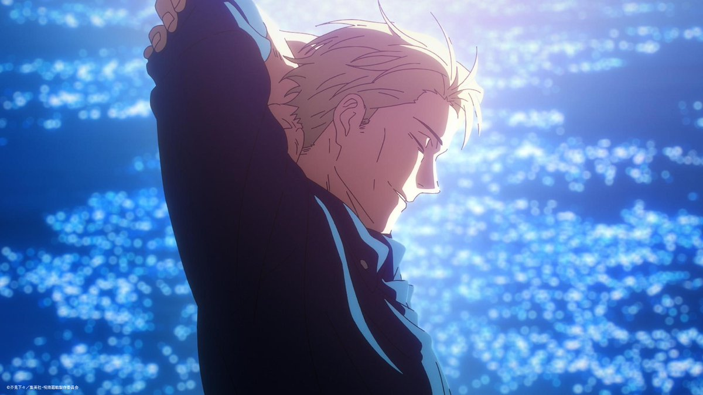

七海
建人
height:
184cm
age:
27歲
birthday:
7月3日

Front-End Developer
東京都立咒術高等專門學校出身的1級咒術師，五條悟的後輩，黑閃連續發生紀錄（4次）的保持者
已被虎杖悠仁打破
，早期通過人才招攬進入的高專。
有四分之一的丹麥血統，祖父是丹麥人。 是家系中唯一的咒術師。
時常帶著護目鏡，身著米黃色西裝，身材高大、成熟穩健的中年人
指28歲
。武器是纏著咒符的短砍刀，領帶也是用咒符製成的。
堅守「按時下班」的原則的泰然自若的復職者，擁有直接突擊敵人弱點的洞察力和技術。可以將目標十等分，在7：3的地方強行製造弱點。
高專畢業後曾在普通企業工作，但後來辭職回到了自己討厭的咒術界，現為自由職業咒術師。
咒術師是狗屎，社畜更是狗屎，所以勞動就是狗屎！
討厭加班。可能也和他靠時間上的束縛控制咒力有關，一旦勞動時間（含中途休息）超過八小時的話，束縛就會解開，咒力將上升。
經常持有現實而消極的態度，但也在積極地照顧著後輩。
信任和信賴高專時代的前輩五條悟，但是並不尊敬他。
深受五條悟的信任和豬野琢真的仰慕。
興趣特長是獨自飲酒，討厭的食物為生麵條，壓力來源為加班我討厭加班！。
酒量不亞於家入硝子。
Experience
早年
東京都立咒術高等專門學校->一般金融企業->咒術師
狗屎
畢業後入職一般金融企業暫時放棄了咒術師之路。 成為上班族後步入迷茫期，在一次便利店買麵包的時候祓除了櫃檯小姐背後的咒靈，收到其感謝後從公司辭職，重新走上了咒術師之路。
幼魚與逆罰篇
一級咒術師
還是狗屎
受五條悟委託，帶領虎杖調查三名男學生在影院離奇死亡的案件。途中遭遇怪靈並展開戰鬥，首次展現其「七三開咒術」的能力。一邊教導虎杖一邊輕鬆取勝。
澀谷事變篇
一級咒術師
真男人
與禪院直毘人，釘崎野薔薇，伏黑惠一起和特級怪靈陀艮展開戰鬥。途中被其拖入領域，左眼被打中，身負重傷。 擊敗陀艮後又遭遇特級咒靈漏瑚，並被其用火焰咒術秒殺，全身著火。 在重傷狀態下仍堅持與地鐵站內不計其數的改造人血戰，回想起了自己曾經逃避過咒術師責任的過去。 遇到真人以及虎杖，自知命不久矣，對虎杖說出」以後就交給你了「之後被真人用「無為轉變」殺死。
Education
東京都立咒術高等專門學校
東京
學生
七海與灰原在一次簡單任務中由於收到有關咒靈錯誤的等級信息導致灰原殉職（失去了下半身），七海傷心欲絕，畢業後入職一般金融企業暫時放棄了咒術師之路。
Quote
1.
“ 我討厭加班！ ”
2.
“ 枕邊脫落的頭髮變多了，喜歡吃的夾心麵包從便利店消失了，這些小小的絕望堆徹起來才會讓人長大。 ”
Skills
術式 「
黑閃
」
在打擊與咒力造成的衝擊誤差0.000001秒之內時產生空間扭曲，七海的記錄是連續4次發動黑閃。 在劇場版0百鬼夜行一戰，七海可配合十劃咒法「瓦落瓦落」同時使用，破壞力極強。
十劃咒法「瓦落瓦落」
這種術式可以將目標的長度等份劃分並在7:3的點上強行製造弱點（即使比施術者強悍的對手也能造成一定傷害），只要擊中「點」就能夠觸發「暴擊」傷害，缺點是這種咒術只能用在近戰上無法遠程攻擊。 可指定任意部位為攻擊目標，而且對非生物對象也同樣有效。
favorite food
麵包，西班牙蒜味蝦，酒類
{kind=link}